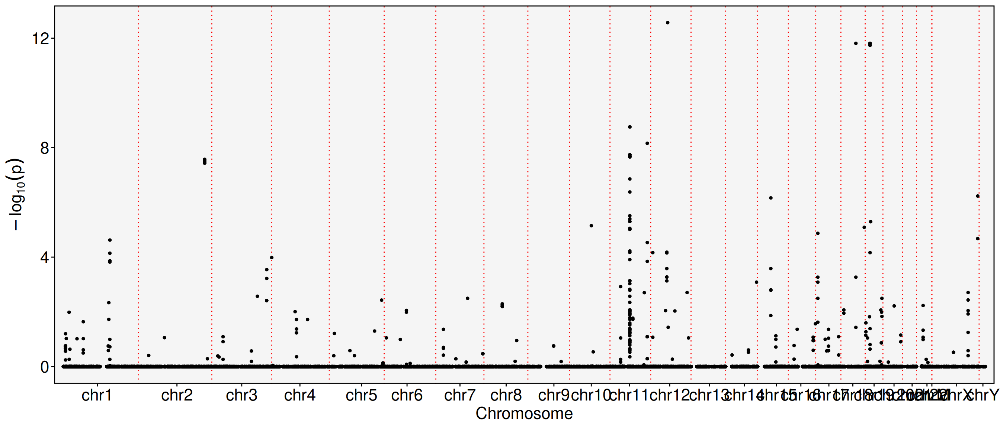
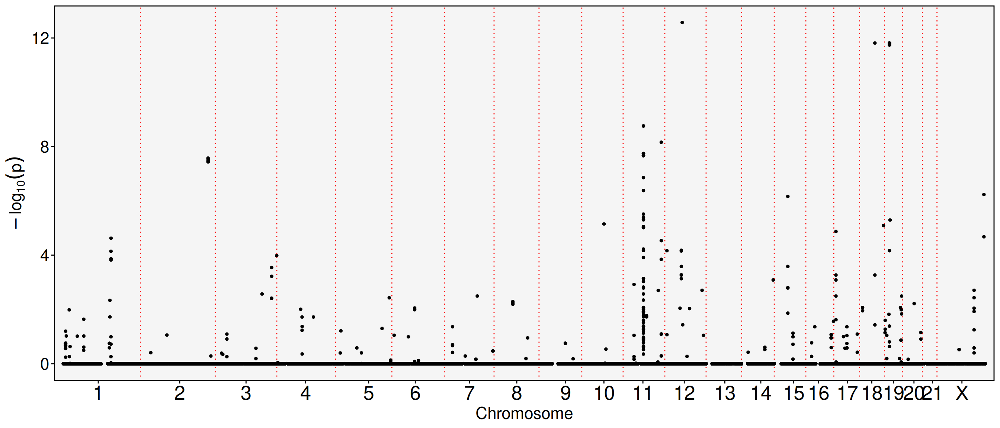
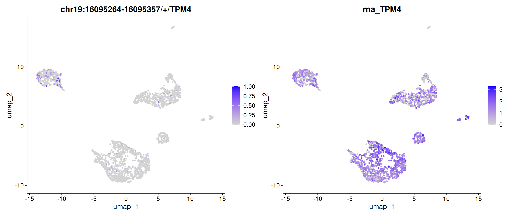
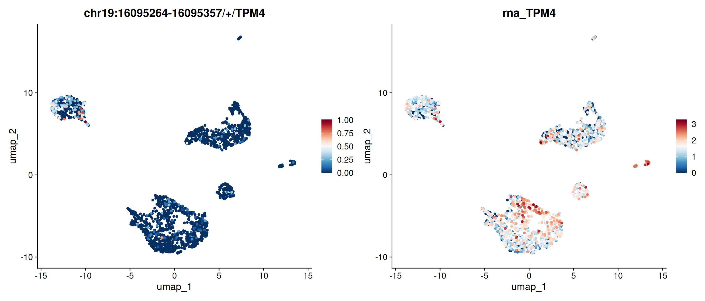
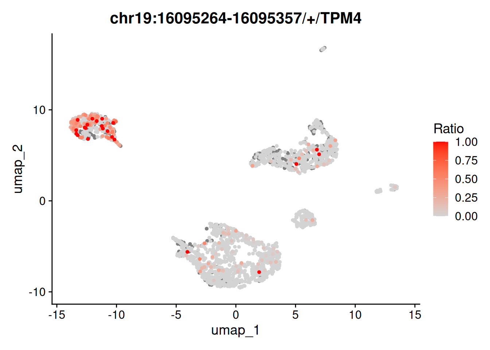
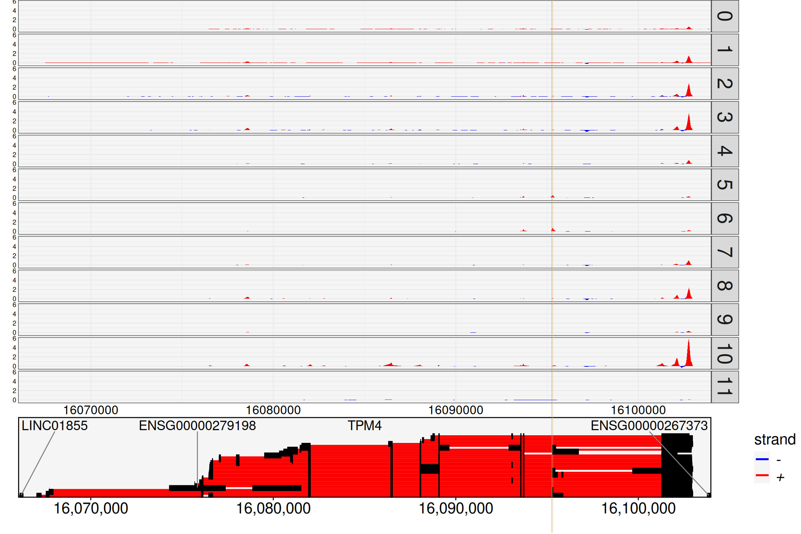
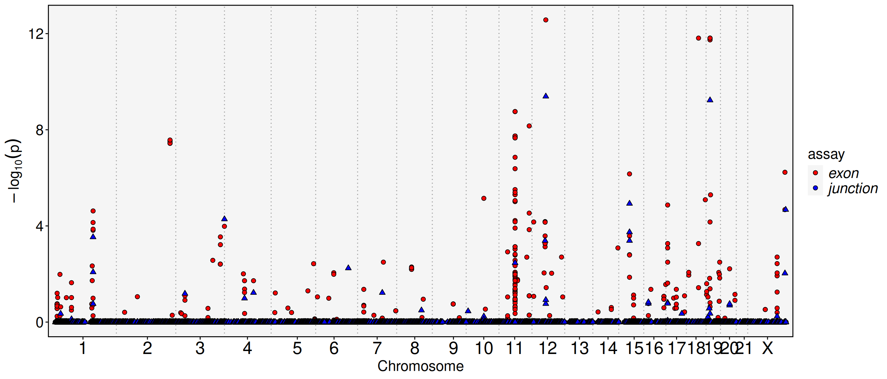
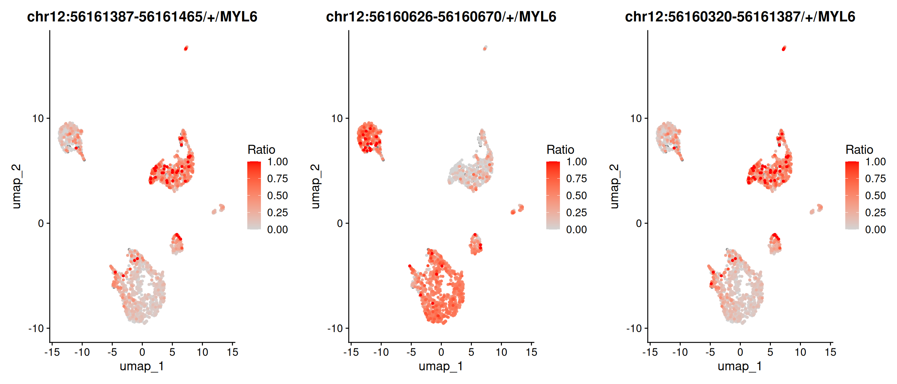
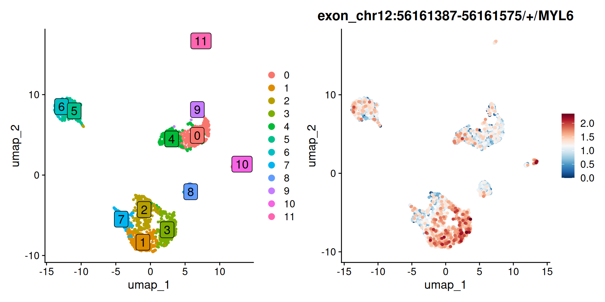
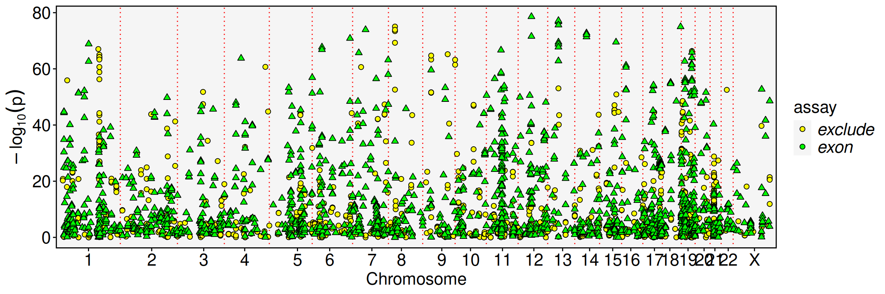

Alternative splicing analysis for single cell RNA sequencing
This vignette demonstrates alternative splicing analysis using gene, exon, and junction expression matrices generated by PISA. Although most scRNA-seq protocols are 3’ or 5’ biased, partial exon coverage can still be captured. The spatial dissimilarity test in Yano exploits the spatial distribution of features, so even lowly expressed features with strong spatial patterns can be detected. By comparing exon/junction expression against their host gene’s expression in spatial context, potential alternative splicing events are identified.
0. Prerequisite
Make sure you have installed the R environment and Yano package before proceeding with the testing.
1. Perform cell clustering with Seurat
require(Yano)
Loading required package: Yano
require(Seurat)
Loading required package: Seurat
Loading required package: SeuratObject
Loading required package: sp
Attaching package: 'SeuratObject'
The following objects are masked from 'package:base':
intersect, t
require(dplyr)
Loading required package: dplyr
Attaching package: 'dplyr'
The following objects are masked from 'package:stats':
filter, lag
The following objects are masked from 'package:base':
intersect, setdiff, setequal, union
require(ggplot2)
Loading required package: ggplot2
require(Matrix)
Loading required package: Matrix
# Read raw gene expression matrixexp <-ReadPISA("./exp/")
In this section, we will perform the standard Seurat analysis pipeline.
Note: The spatial dissimilarity test does not depend on clustering. Changing resolution or other parameters for FindClusters and RunUMAP has no impact on the results.
# Create Seurat object and filter droplets with fewer than 1000 genesobj <-CreateSeuratObject(exp, min.features =1000, min.cells =10)# Filter low quality dropletsobj[["percent.mt"]] <-PercentageFeatureSet(obj, pattern ="^MT-")obj <-subset(obj, nFeature_RNA <9000& percent.mt <20)# Downsampling to 2000 cells for fast testingobj <- obj[, sample(colnames(obj),2000)]# We run the cell clustering analysis with Seurat pipelineobj <-NormalizeData(obj) %>%FindVariableFeatures() %>%ScaleData() %>%RunPCA(verbose=FALSE) %>%FindNeighbors(dims =1:10, verbose=FALSE) %>%FindClusters(resolution =0.5, verbose=FALSE) %>%RunUMAP(dims=1:10, verbose=FALSE)
Here we compare exon expression with their host gene’s expression in a spatial context. “Spatial” refers to cell organization: in this vignette we use PCA space, but the method also supports spatial coordinates, lineage trajectories, or integration spaces such as harmony. The workflow has three steps. First, load exon data as a new assay. Second, run spatial autocorrelation to select informative exons. Third, define exon–gene binding relationships and run the spatial dissimilarity test to obtain p-values and adjusted p-values.
# Read exon count matrix fileexon <-ReadPISA("./exon/")# Load the exon expression to Seurat object as a new assay, make sure the exon matrix has the same cells.obj[['exon']] <-CreateAssayObject(exon[, colnames(obj)], min.cells=20)# Switch work assay to exonDefaultAssay(obj) <-"exon"# Empty info for exon featureshead(obj[['exon']][[]])
data frame with 0 columns and 6 rows
obj <-ParseExonName(obj)
Working on assay exon
# Gene name and location are parsed from exon namehead(obj[['exon']][[]]) %>% DT::datatable()
# Normalize the data for spatial autocorrelation testobj <-NormalizeData(obj)obj <-RunAutoCorr(obj)
Working on assay : exon
Run autocorrelation test for 117195 features.
Runtime : 12.9972 secs
71358 autocorrelated features.
The permutation test is computationally expensive. Below we use perm=20 for quick results; the default is 100 permutations for better accuracy. If you are running Yano for the first time on a new dataset, perm=20 saves time and provides a useful overview.
Use "data" layer for test features and binding features.
Using 95 threads.
Runtime : 25.61018 secs.
# Now p values and adjusted p values have been generatedhead(obj[['exon']][[]]) %>% DT::datatable()
# Plot feature binding test plotFbtPlot(obj, val ="gene_name.padj")

The chromosome names are long and often overlap in the plot. You can resize labels or remove the “chr” prefix. The Y chromosome and mitochondrial genes can also be excluded.
sel.chrs <-c(1:21, "X")FbtPlot(obj, val ="gene_name.padj", remove.chr =TRUE, sel.chrs = sel.chrs)

# Let's see how many exons are expressed in different spatial pattern with their genesobj[['exon']][[]] %>%filter(gene_name.padj <1e-5) %>% DT::datatable()
# Random select a gene and its exons and visulize with FeaturePlot.FeaturePlot(obj, features =c("chr15:43801711-43804427/+/SERF2", "SERF2"), ncol=2)

# The default color and parameters perhaps not easily to tell the difference between exon and its binding gene expression. Let's change the scaled colors and enlarge point size and order by expression.require(RColorBrewer)
Loading required package: RColorBrewer
FeaturePlot(obj, features =c("chr15:43801711-43804427/+/SERF2", "SERF2"), ncol=2, order =TRUE, pt.size=1) &scale_colour_gradientn(colours =rev(brewer.pal(n =11, name ="RdBu")))
Scale for colour is already present.
Adding another scale for colour, which will replace the existing scale.
Scale for colour is already present.
Adding another scale for colour, which will replace the existing scale.

The RatioPlot function maps the ratio of exon expression to gene expression on the UMAP. SERF2 is lowly expressed in some cell groups, while the exon chr15:43801711-43804427/+/SERF2 shows a higher ratio in those same groups.
RatioPlot(obj, features =c("chr15:43801711-43804427/+/SERF2"), assay ='exon', bind.assay ='RNA', bind.name ="gene_name", order =TRUE, pt.size=1)

In the plots above, the exon lacks a strong expression pattern across cell groups, while the gene SERF2 is highly expressed in most groups except a few. This inconsistency between exon and gene expression may indicate differential exon usage. Next we generate a track plot to inspect read coverage for the exon and gene body.
Yano loads gene locations from a GTF file rather than Bioconductor databases (e.g., org.Hs.eg.db). This avoids inconsistencies from differing annotation versions across sources. We recommend using the same GTF file throughout your project. The gtf2db function loads a GTF file into memory.
The track plot shows read coverage per cell group, specified by cell.group. Unlike IGV which uses read depth, this plot shows UMI depth. The cell barcode and UMI tags default to “CB” and “UB” (cell.tag and umi.tag). For each cell group, UMI depth is normalized by the number of cells, so the tracks are directly comparable across groups. If cell.group is not set, raw UMI depth per location is shown.
Warning: Using `size` aesthetic for lines was deprecated in ggplot2 3.4.0.
ℹ Please use `linewidth` instead.
ℹ The deprecated feature was likely used in the Yano package.
Please report the issue to the authors.

In the track plot, an exon around position 43,794,000 dominates SERF2 expression and is highly expressed across many cell groups. The highlighted exon chr15:43801711-43804427/+/SERF2 is barely visible at the default scale. Setting max.depth = 2 caps the depth and setting display.genes = "SERF2" filters to the gene of interest, making low-expressed exons visible. The highlighted exon now shows a distinct expression pattern from the gene SERF2.
Junction expression provides a complementary view of alternative splicing. Junctions capture reads spanning adjacent exons. They are named similarly to exons but with different coordinates: the junction start is the end of the upstream exon, and the junction end is the start of the downstream exon.
# Because both exon and junction are compared with gene, so it's reasonable to combine these two assays in one plotFbtPlot(obj, val="gene_name.padj", assay =c("exon", "junction"), col.by ="assay", shape.by ="assay", pt.size =2, remove.chr =TRUE, sel.chrs = sel.chrs, cols =c("red", "blue"))

# We can find there is an exon and a junction at chromosome 12 with very low p value (<1e-5), let's see which gene they are locatedobj[['exon']][[]] %>%filter(chr =="chr12"& gene_name.padj <1e-5) %>% DT::datatable()
FeaturePlot(obj, features =c("chr12:56161387-56161465/+/MYL6","chr12:56160320-56161387/+/MYL6", "MYL6"), order =TRUE, pt.size =2, ncol=3) &scale_colour_gradientn(colours =rev(brewer.pal(n =11, name ="RdBu")))
Scale for colour is already present.
Adding another scale for colour, which will replace the existing scale.
Scale for colour is already present.
Adding another scale for colour, which will replace the existing scale.
Scale for colour is already present.
Adding another scale for colour, which will replace the existing scale.
# We could also plot the expression ratio of these exons or junctions on umapp1 <-RatioPlot(obj, assay ="exon", bind.assay ="RNA", bind.name ="gene_name", features ="chr12:56161387-56161465/+/MYL6")p2 <-RatioPlot(obj, assay ="exon", bind.assay ="RNA", bind.name ="gene_name", features ="chr12:56160626-56160670/+/MYL6")p3 <-RatioPlot(obj, assay ="junction", bind.assay ="RNA", bind.name ="gene_name", features ="chr12:56160320-56161387/+/MYL6")cowplot::plot_grid(p1,p2,p3, ncol=3)

We then visualize the track plot for this gene, including junction reads by setting junc=TRUE. The height of the splice paths in the plot represents the expression level of each junction within the specified cell group.
The exon chr12:56161387-56161465/+/MYL6 appears highly expressed in group 3 in the track plot, yet its expression in the feature plot is lower than expected. This is because the exon overlaps with other exons from different transcripts. Only reads fully contained within the exon are counted toward its expression; partially overlapping reads are excluded.
The overlapping exon chr12:56161387-56161575/+/MYL6, by contrast, shows strong expression in group 3. Note that when a read is fully contained within multiple overlapping exons, PISA counts it for all of them. See PISA’s manual for details.
p1 <-DimPlot(obj, label=TRUE, label.size =5, label.box =TRUE)p2 <-FeaturePlot(obj, features =c("chr12:56161387-56161575/+/MYL6"), order =TRUE, pt.size =1) &scale_colour_gradientn(colours =rev(brewer.pal(n =11, name ="RdBu")))
Warning: Could not find chr12:56161387-56161575/+/MYL6 in the default search
locations, found in 'exon' assay instead
Scale for colour is already present.
Adding another scale for colour, which will replace the existing scale.
p1 + p2

4. Heatmap analysis for highlight group specific alternative splicing
The spatial dissimilarity test identifies alternatively spliced exons and junctions across all cells, but does not pinpoint which cell groups drive the signal. To address this, we extract scaled expression for the selected exons and their host genes, then perform co-clustering. The heatmap below uses ComplexHeatmap to visualize the distribution across cell groups.
The spatial dissimilarity test is not limited to gene-level binding features. Here we test exon expression against reads that skip the exon (exclude assay). This is analogous to the Percent Spliced In (PSI) method widely used in bulk and single-cell RNA-seq: PSI = exon reads / (exon reads + reads skipping this exon).
# The reads that skip exons are annotated using the `-psi` option in PISA anno, and these counts are stored in the `exclude` directory. We then load these excluded counts into a new assay.exclude <-ReadPISA("exclude/")obj[['exclude']] <-CreateAssayObject(exclude[,colnames(obj)], min.cells =10)DefaultAssay(obj) <-"exclude"# Normalize counts for exon-excluded readsobj <-NormalizeData(obj)# Then we switch to exon assayDefaultAssay(obj) <-"exon"# Because the feature names in the exclude assay are exactly the same as those in the exon assay, they represent the reads that skip each corresponding exon. Therefore, we set up the binding feature using the exon name itself.obj[['exon']][['exon_name']] <-rownames(obj)obj[['exon']][['exon_name']] %>% head
# Then we perform spatial dissimilarity test between exon and exclude, mode 1obj <-RunSDT(obj, bind.name ="exon_name", bind.assay ="exclude")# Swith to exon exluded assayDefaultAssay(obj) <-"exclude"obj <-RunAutoCorr(obj)obj <-ParseExonName(obj)obj[['exclude']][['exon_name']] <-rownames(obj)obj <-RunSDT(obj, bind.name ="exon_name", bind.assay ="exon")FbtPlot(obj, val ="exon_name.padj", remove.chr =TRUE, assay =c("exclude", "exon"), shape.by ="assay", col.by ="assay", cols =c("yellow", "green"), pt.size =2)

# Let's how many exons can be prioritized by both exon assay and exclude assayobj[['exclude']][[]] %>%filter(exon_name.padj<1e-5) %>% rownames -> sel1obj[['exon']][[]] %>%filter(exon_name.padj<1e-5) %>% rownames -> sel2intersect(sel1,sel2)
Exon or junction expression is part of gene expression, so inverse expression patterns can indicate alternative splicing. By contrast, exon-skipped reads are largely independent of exon expression, offering higher sensitivity for detecting splicing events.
The spatial dissimilarity test does not model the spatial dependency of the binding feature, so many events may be prioritized when the binding feature is sparse. Intersecting results from both directions (exon vs. exclude and exclude vs. exon) helps reduce false positives from low coverage.
Mode 3 specifically detects strong inverse expression patterns by summing exon reads and exon-excluded reads as the binding assay. Events found by mode 3 are a subset of those found by mode 1, making it a stricter filter.
In this case study, we applied the spatial dissimilarity test to multiple feature pairs. The method works on the entire cell population without requiring prior clustering or annotation, making it suitable for exploratory analysis. We recommend testing both exons and junctions against their host genes, particularly in 3’ or 5’ biased scRNA-seq data. The exon vs. exon-skipped comparison provides additional power to detect exon exclusion events. For cell-cluster-specific patterns, follow up with heatmaps and co-clustering.
Questions?
If you have any questions regarding this vignette and the usage of Yano, please feel free to report them through the discussion forum. When submitting your query, please ensure you attach the commands you used for better clarity and support.